※这篇文章是用AI（Chat GPT 5Thinking）生成后，再由我自己补写了一部分😆
2025年1月吃的😄🌺去了西原町翁长的「Nomaclo」。
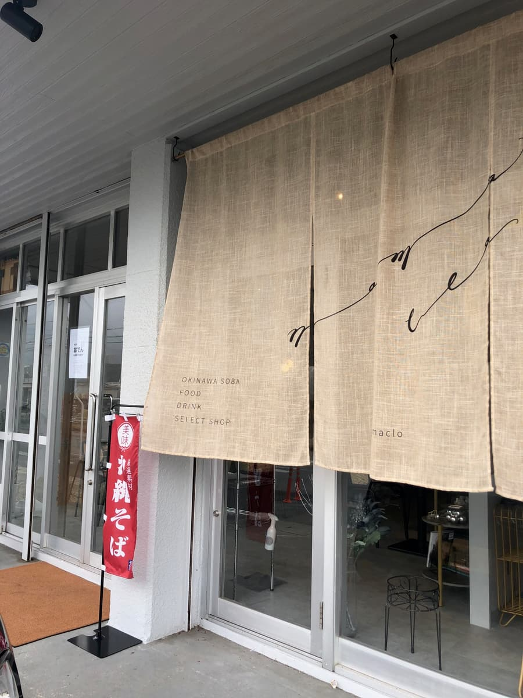
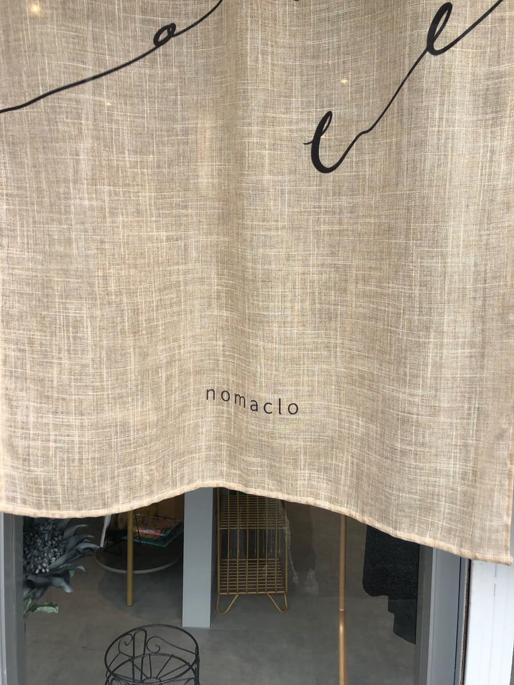
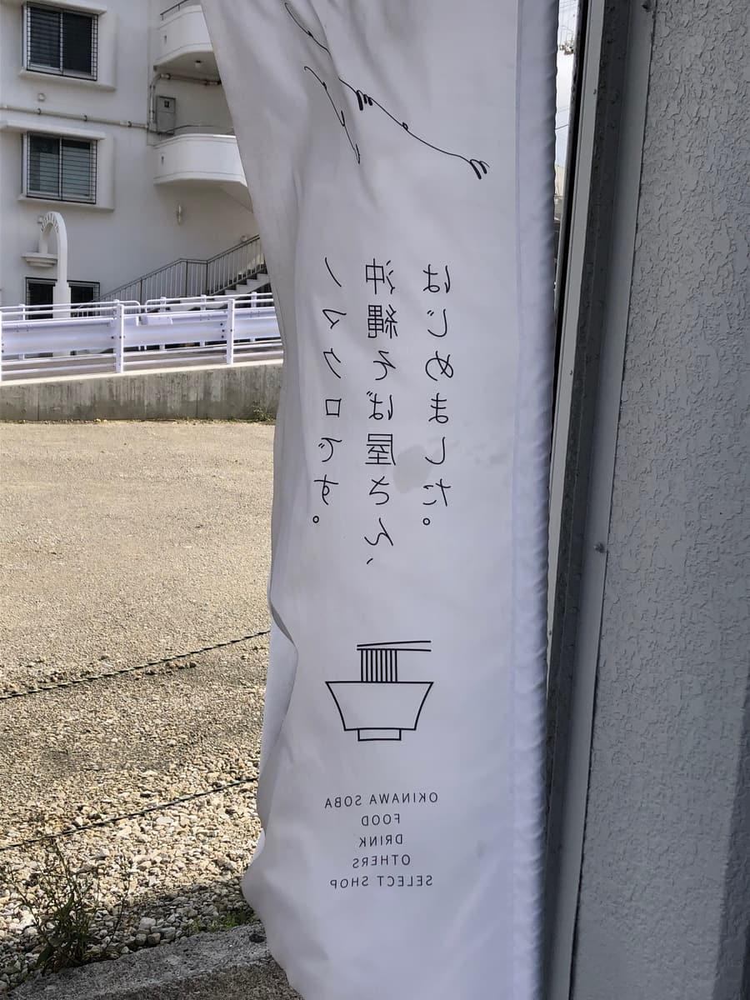
暖帘上像丝线一样的商标首先就很可爱，跟白墙和木头质感温柔的外观很搭。虽然是冲绳面店，但玻璃门的另一头也有选物店的氛围，感觉正是用「nomaclo」的世界观统整起来的。
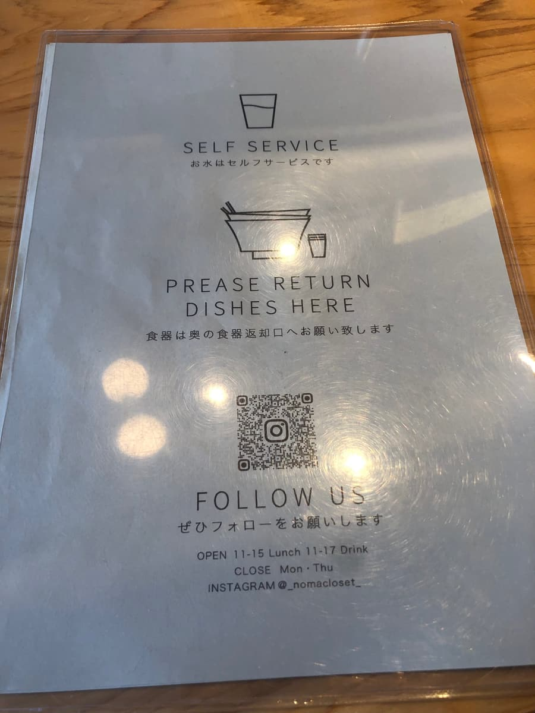
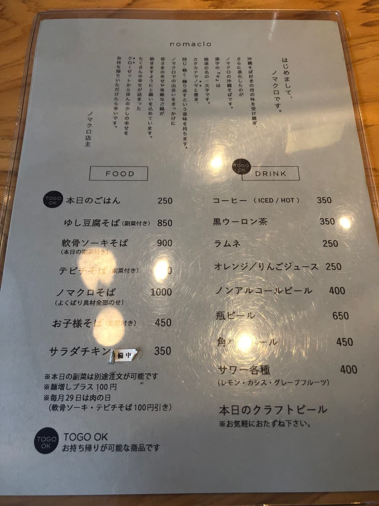
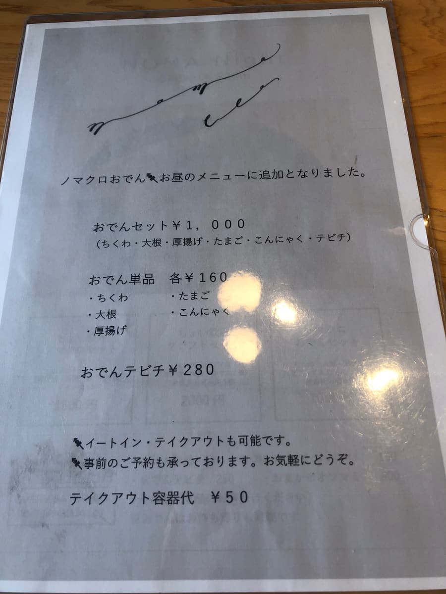
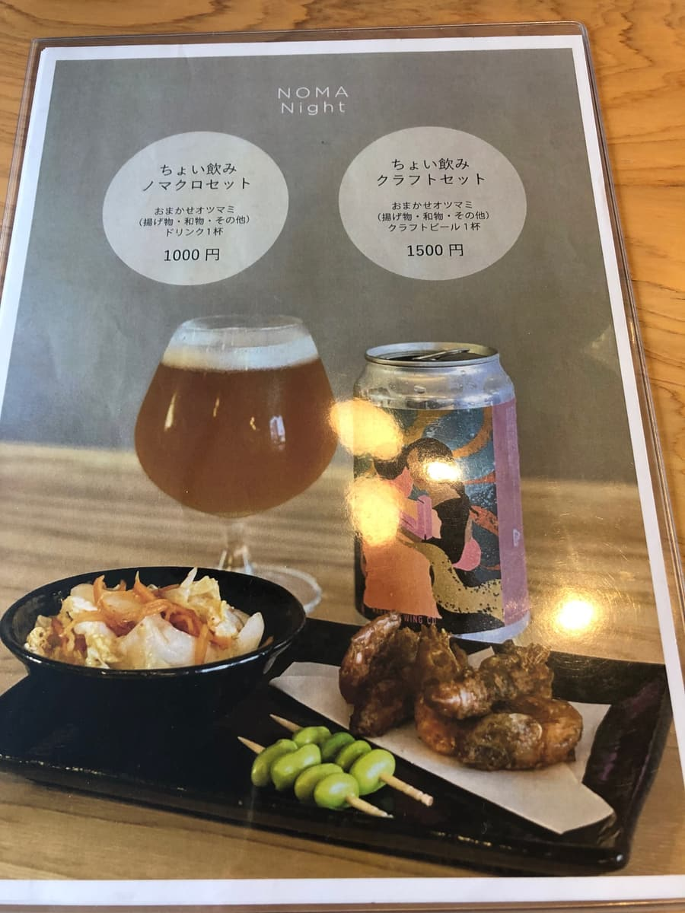
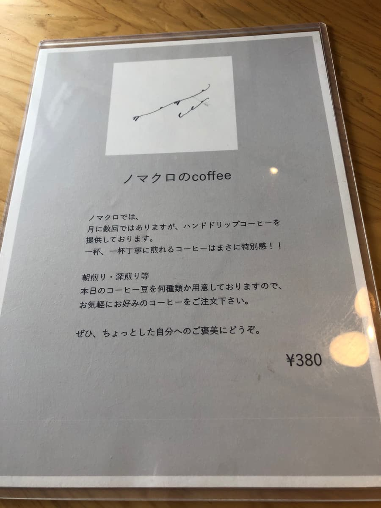
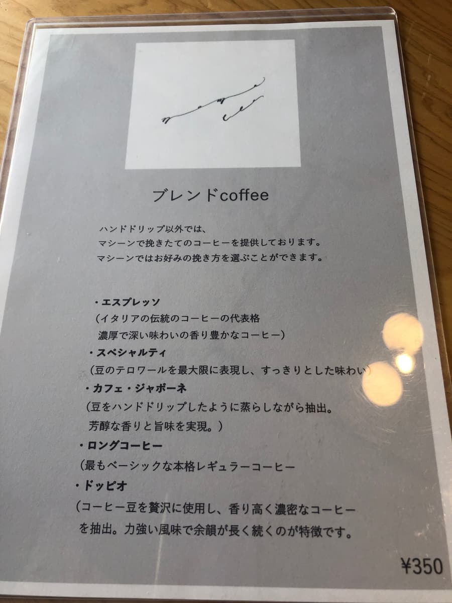
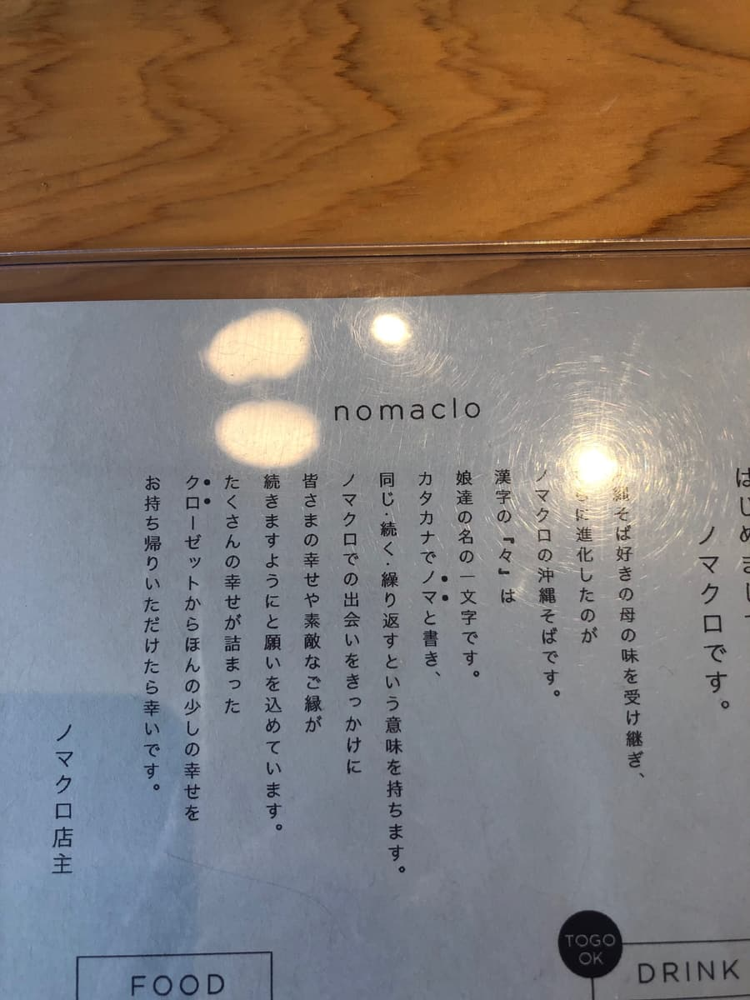
一坐下，桌上的说明写着「开水请自助」「餐具请送到回收口」，像咖啡厅一样舒服又俐落。还有营业时间和Instagram的QR码，散发着时下的感觉。看了看菜单，除了冲绳面以外，还有咖啡、无酒精饮料、精酿啤酒，以及可外带的字样。还有「nomaclo关东煮」和「猪脚」，让人有点兴奋呢。这次点了跟店名一样的「nomaclo面（全部都加）」喔。
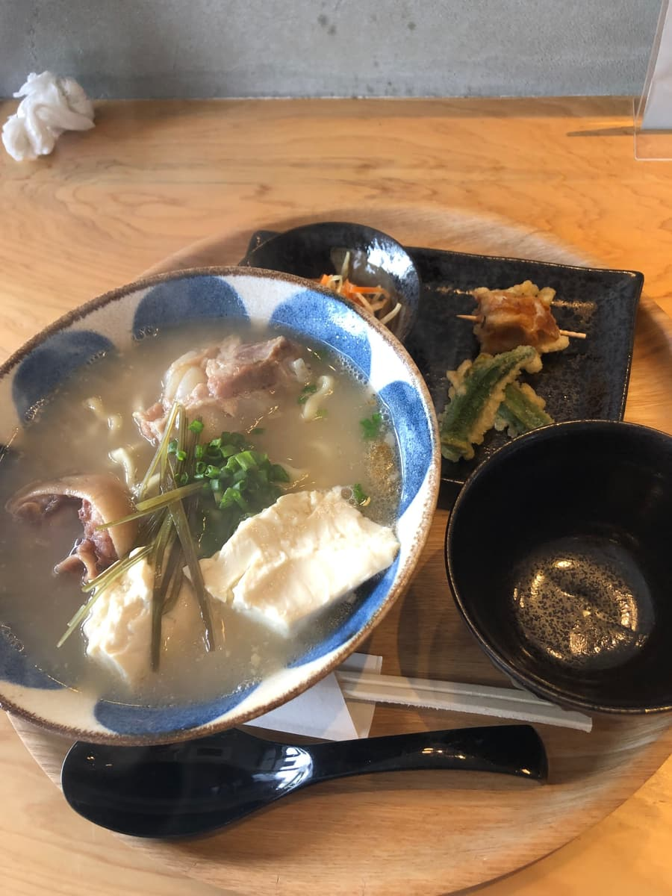
放在圆托盘上送来的这一碗，碗上的水玉图案首先就很上相。汤头是猪骨高汤的乳白类型。喝一口，很浓郁滑顺。骨头的鲜味温柔地扩散开来。是让我想起宇流麻市「月黑木」的浓厚路线，也很有层次，感觉熬煮得很用心。
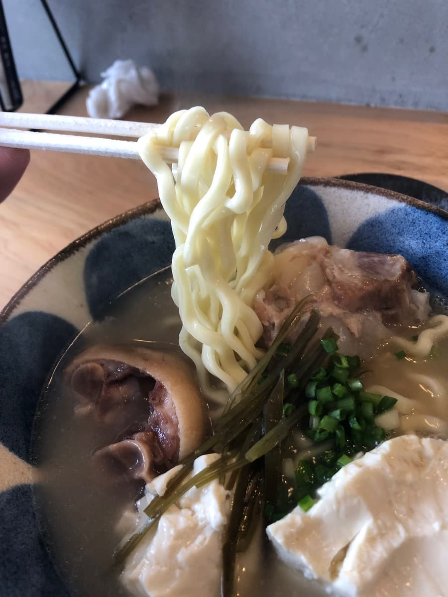
面是中粗的微卷面。用筷子夹起来亮晶晶的，放进嘴里会有Q弹地回弹牙齿的感觉，很舒服。多亏了卷度，面条能裹上汤汁，吸起来的时候猪骨的甜味会同时轻柔地涌上来。煮的程度偏软，跟汤头的浓郁滑顺结合在一起，带出一种「温柔的一体感」。
配料就像名字一样全部都加，看起来也很热闹。猪脚软嫩到入口即化，胶原蛋白Q弹的弹力很有趣。去油的程度刚好，吃起来不会感觉腻，很顺口。软骨排骨也是清爽的做法，骨头周围的胶质一下就散开，越嚼越能渗出鲜味。另外让我很开心的是冲绳嫩豆腐的白。轻轻就散开的丝绸般柔软，跟汤头的奶香超级搭，把整体的印象收得更加温和。昆布和青葱成为香气的点缀，余韵不会变得拖沓，这点我也很喜欢。
然后旁边的小碟子上，小巧地放着现炸的天妇罗。有秋葵和竹轮两种，面衣偏薄，咬下去酥脆轻盈。好吃😋喝一口汤再咬一口天妇罗，再回到面，味道就会被重新刷新。温度的对比也很有趣，有种赚到了的感觉。圆托盘和黑色小碟子的对比很好看呢📷
店内新颖又干净，明亮木纹的桌子配上黑色汤匙和餐具的配色很有型。墙边摆着精选的杂货，杯子、布制品、植物不经意地摆放着，感觉闺蜜一起来或约会来应该也会很开心。也有手冲咖啡的菜单，饭后能享用一杯也很不错。
包含摆盘和餐具的品味、天妇罗的附加价值、店内的舒适感，作为整体体验的满意度是确实很高的。
评分（9分/15分）：下次搭配关东煮套餐或咖啡，慢慢地度过时光或许也不错。总之，味道是「还算好吃」这样沉稳的落点，大家要不要来这间店一次看看呢🙂
面：★★★☆☆（3）
汤头：★★★☆☆（3）
配料：★★★☆☆（3）